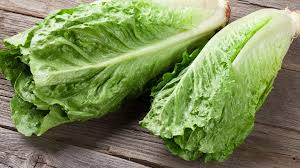
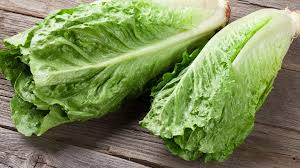
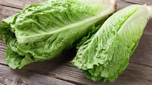

Featured Crops
 


Connecting city dwellers with sustainable urban farming.

Plant in well-drained soil, ensure 6–8 hours of sunlight, and water consistently at the base to prevent leaf diseases.
Grow in cool weather, keep soil moist but not soggy, and harvest leaves regularly to encourage continuous growth.
Plant in nutrient-rich soil, provide partial shade in hot climates, and thin seedlings to allow proper spacing.
Tao Farmers began as a small community project in 2020 when city food prices were soaring. A few passionate individuals decided to turn unused rooftops and balconies into thriving gardens. Over time, this initiative grew into a hub where anyone could learn to grow food, save money, and reconnect with nature—even in the middle of the city.